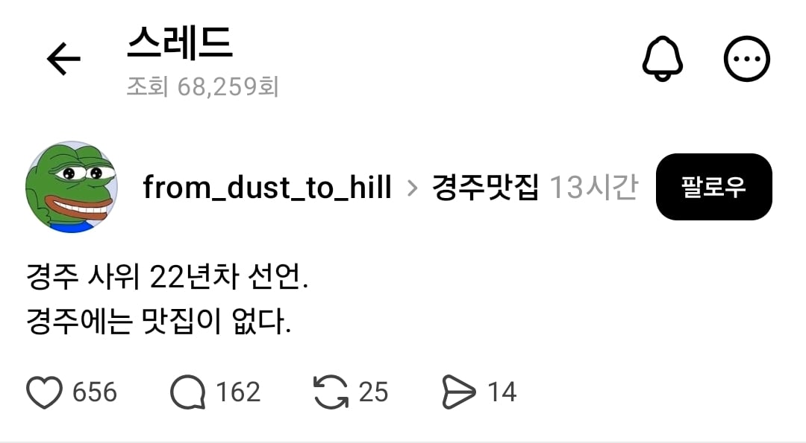
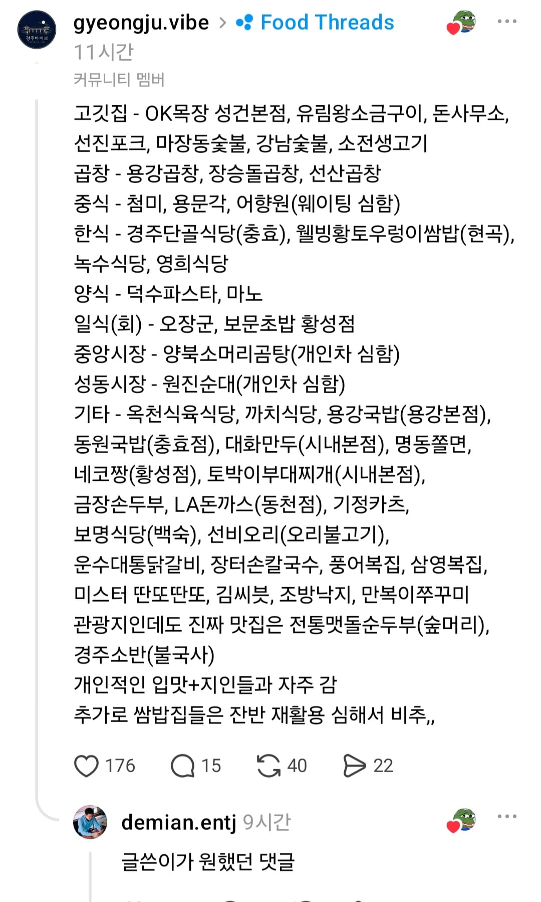

https://www.threads.com/share/_mHJSqptg/
사람들을 긁으면 된다 ㅋㅋㅋㅋ
식당이름 계속 올라오는데
가끔 어디어디 맛집 찾는 개붕이들있길래
경주쪽 식당찾는 사람 있을까바 링크도 가져옴


https://www.threads.com/share/_mHJSqptg/
사람들을 긁으면 된다 ㅋㅋㅋㅋ
식당이름 계속 올라오는데
가끔 어디어디 맛집 찾는 개붕이들있길래
경주쪽 식당찾는 사람 있을까바 링크도 가져옴
덕수파스타 체인점인데
맛집이 읍는건 맞긴함
것보다는 수십년을 관광객만 상대하다보니 싸가지가 존나없음
동냥하러온 거지취급
잘 긁었네
맛은 주관적인건데 의미가있나